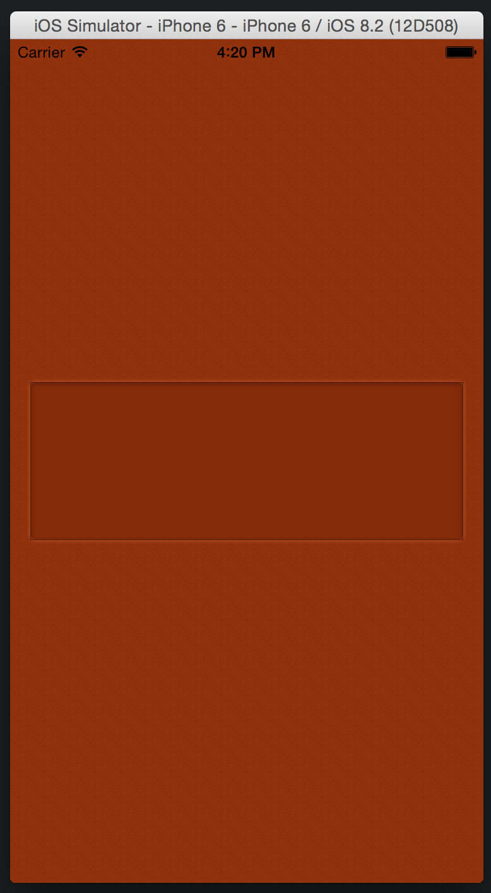
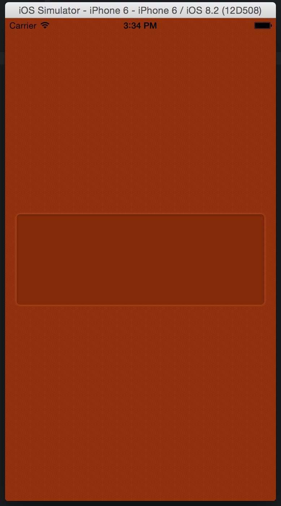
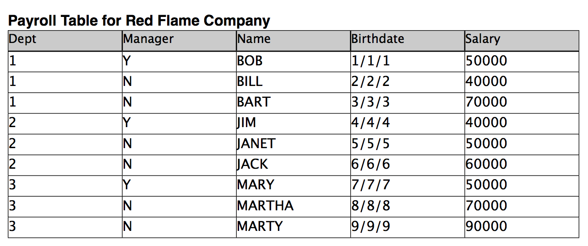

UIView Inset Effect
18 Mar 2015
By Nate Armstrong -> Custom Bit Programmer
I know shadows have been kicked to the curb with iOS 7 but I'm still a sucker for
a nice inset effect.
The Mockup
Here is what the design (mocked up in Sketch 3)
called for:

In the example above the inset view is being used to contain a text field but
as you will see later on the inset will work and look okay with many inner views.
The inset effect view consists of a few attributes:
- background color that is slightly darker than its surroundings
- dark inner shadow
- faint outer shadow
Hint: I'm not a designer but the textured background on the surrounding view
in combination with the solid background of the inner view makes for a nice effect
in my opinion. Also, any and all design tips are welcome in the comments.
The Implementation
I will walk you through how I accomplished this effect though I am sure there are
many different ways including superior alternatives.
Shadows
A UIView has a layer property which, as a CALayer, provides us with some
helpful properties for applying shadows. Those properties do not help us with
what Sketch would call Inner Shadows so we'll have to get sneaky for the inner
shadow but the outer shadow will be straightforward.
Inner Shadow
I used a YIInnerShadowView to accomplish
the inner shadow effect with a little bit of tweaking which I will get to in a minute.
I included the class as a pod using cocoapods.
Outer Shadow
As I mentioned above the CALayer class has a few properties for applying shadows.
Specifically shadowRadius, shadowColor, shadowOpacity and shadowOffset will
be of great use to us.
FancyInsetView
That's what we'll call it, FancyInsetView. Assuming you checked out the YIInnerShadowView
class you might think it would be as easy as something like:
// initialize the view using YIInnerShadowView
let myView = YIInnerShadowView(frame: rect)
myView.backgroundColor = UIColor(red: 132/255.0, green: 43/255.0, blue: 10/255.0, alpha: 1.0)
// round the corners
myView.layer.cornerRadius = 5.0
myView.clipsToBounds = true
// customize the YIInnerShadow
myView.shadowRadius = 2.0
myView.shadowColor = UIColor(white: 4/255.0, alpha: 1.0)
myView.shadowOffset = CGSizeMake(0.0, 1.0)
myView.shadowOpacity = 0.5
// give it a faint outer shadow
myView.layer.masksToBounds = false
myView.layer.shadowRadius = 2.0
myView.layer.shadowColor = UIColor(red: 197/255.0, green: 88/255.0, blue: 53/255.0, alpha: 1.0).CGColor
myView.layer.shadowOpacity = 1.0
myView.layer.shadowOffset = CGSizeMake(0.0, 0.0)
With that most basic approach we end up with:

Which is close but not quite what we want. If you look closely, the
YIInnerShadowView is creating a dark, thin border around the view and the
corners are not rounded. The reason the corners are not rounded is because of
myView.layer.masksToBounds = false
Without that line the inner shadow view rounds like we want but the outer shadow
disappears. That is because in order for the outer shadow to show up we must set
layer.masksToBounds to false. So we have a problem.
The Solution
We need rounded corners as well as a drop shadow so my solution involves an additional
view nested inside that contains the YIInnerShadowView and the outer view has the
outer shadow properties set.
I made the inner view just a pixel bigger than the container in order to hide the thin border.
class FancyInsetView: UIView {
lazy var innerShadow: YIInnerShadowView = {
let view = YIInnerShadowView(frame: CGRectZero)
view.shadowRadius = 2.0
view.shadowColor = UIColor(white: 4/255.0, alpha: 1.0)
view.shadowOffset = CGSizeMake(0.0, 1.0)
view.shadowOpacity = 0.5
return view
}()
var innerView: UIView!
var cornerRadius: CGFloat = 5.0 {
didSet {
layer.cornerRadius = cornerRadius
innerView.layer.cornerRadius = cornerRadius
}
}
required init(coder aDecoder: NSCoder) {
super.init(coder: aDecoder)
setup()
}
override init(frame: CGRect) {
super.init(frame: frame)
setup()
}
func setup() {
backgroundColor = UIColor(red: 132/255.0, green: 43/255.0, blue: 10/255.0, alpha: 1.0)
clipsToBounds = true
layer.masksToBounds = false
// inner shadow
innerView = UIView()
innerView.layer.masksToBounds = true
innerView.addSubview(innerShadow)
insertSubview(innerView, atIndex: 0)
// outer shadow
layer.shadowRadius = 2.0
layer.shadowColor = UIColor(red: 197/255.0, green: 88/255.0, blue: 53/255.0, alpha: 1.0).CGColor
layer.shadowOpacity = 1.0
layer.shadowOffset = CGSizeMake(0.0, 0.0)
}
override func layoutSubviews() {
super.layoutSubviews()
innerView.frame = bounds
innerShadow.frame = CGRectInset(bounds, -1.0, -1.0)
}
}
Here's how it turned out:

That'll work! Code and demo are on GitHub.
MySQL Permissions Tips
10 Mar 2015
By Zach Larsen -> Custom Bit Programmer
Well the last time I posted it was all about MySQL, and I didn't post all I wanted to about MySQL. I've recently learned a fair amount about MySQL permissions which are very handy indeed. Today, I'll walk you through how to set up some basic permissions for a payroll table.
First this is the payroll table that we are going to use:

First step for creating MySQL permissions, is to create a table. We will first need to create a MySQL database to hold our payroll table. To do that all we need to do is type a command inside of MySQL just like this:
DROP DATABASE IF EXISTS RedFlameCompany;
CREATE DATABASE RedFlameCompany;
use RedFlameCompany;
The first line will go through and check if the local MySQL has a database named RedFlameCompany and if it does it drops it. Which means that it will get rid of the MySQL database. The second line means that it creates the database from scratch. The third line then tells MySQL to use the RedFlameCompany database.
Next we will want to create the payroll table so we can give MySQL permissions to see this table:
DROP TABLE IF EXISTS payroll;
CREATE TABLE payroll (
Dept int(3),
Manager boolean,
Name varchar(30),
Birthdate date,
Salary int(7)
);
This will also drop the MySQL table if it already exists, then create the MySQL table. Each line is a different column from the original payroll table that we have above.
Next we will actually want to populate the MySQL table with the data from the picture. this is done as easy as:
INSERT into payroll (Dept, Manager, Name, Birthdate, Salary) VALUES
(1, true, "BOB", "0001-01-01", 50000),
(1, false, "BILL", "0002-02-02", 40000),
(1, false, "BART", "0003-03-03", 70000),
(2, true, "JIM", "0004-04-04", 40000),
(2, false, "JANET", "0005-05-05", 50000),
(2, false, "JACK", "0006-06-06", 60000),
(3, true, "MARY", "0007-07-07", 50000),
(3, false, "MARTHA", "0008-08-08", 70000),
(3, false, "MARTY", "0009-09-09", 90000);
Make sure to use the column names that you recently created, and then put your values in in the same order that you listed them as seen above.
Next we will want to create some MySQL views. Views are an easy way to grant MySQL permissions to someone whom you don't want be able to see all the MySQL database, and someone you especially don't want to have the ability to update or insert on your MySQL database. It is a great way to avoid MySQL injections, and create some great MySQL permissions. Let's create a MySQL view named dept1, dept2, and dept3 so we can give every worker access to see only their department:
CREATE VIEW dept1 AS
SELECT
Dept,
Manager,
Name,
Birthdate,
Salary
FROM
payroll
WHERE
dept = 1;
CREATE VIEW dept2 AS
SELECT
Dept,
Manager,
Name,
Birthdate,
Salary
FROM
payroll
WHERE
dept = 2;
CREATE VIEW dept3 AS
SELECT
Dept,
Manager,
Name,
Birthdate,
Salary
FROM
payroll
WHERE
dept = 3;
Now that we have created the MySQL views, we can start to create all the users and grant them their MySQL permissions. To create a user it is very easy:
CREATE user Bob identified by 'password';
CREATE user Bill identified by 'password';
CREATE user Bart identified by 'password';
CREATE user Jim identified by 'password';
CREATE user Janet identified by 'password';
CREATE user Jack identified by 'password';
CREATE user Mary identified by 'password';
CREATE user Martha identified by 'password';
CREATE user Marty identified by 'password';
This will create all the users that are specified above, and will also assign them a password which in this case is password for everyone.
To grant MySQL permissions we need to decide what MySQL permissions we want to assign. If we want to assign MySQL permissions to do basically anything to the database we would assign them as so:
GRANT ALL PRIVILEGES ON *.* to Mary;
This will give Mary MySQL permissions to do anything she pleases to the database.
If we want to give UPDATE MySQL permissions to Bob for only certain MySQL database columns we can do so just like this:
GRANT UPDATE(Dept,Manager,Name,Birthdate) on RedFlameCompany.dept1 to Bob;
This will give Bob MySQL permissions to UPDATE the Dept, Manager, Name, and Birthdate columns on the dept1 MySQL table.
What if we want to grant view only MySQL permissions to someone? That will be as easy as:
GRANT SELECT(Dept,Manager,Name,Birthdate) on RedFlameCompany.dept1 to Bill;
Now Bill has MySQL permissions to SELECT or view the Dept, Manager, Name, and Birthdate columns on the dept1 MySQL table.
All we have left to do is to check the MySQL permissions of a user. We can do that with the SHOW GRANTS command:
Which will output:
--------------
SHOW GRANTS For 'Mary'
--------------
+--------------------------------------------------------------------------------------------------------------+
| Grants for Mary@% |
+--------------------------------------------------------------------------------------------------------------+
| GRANT ALL PRIVILEGES ON *.* TO 'Mary'@'%' IDENTIFIED BY PASSWORD '*2470C0C06DEE42FD1618BB99005ADCA2EC9D1E19' |
+--------------------------------------------------------------------------------------------------------------+
1 row in set (0.00 sec)
This shows that Mary truly does have MySQL permissions to do anything she wants in the MySQL database.
The rest of my MySQL code can be found here. If you have any questions or comments feel free to leave a comment below.